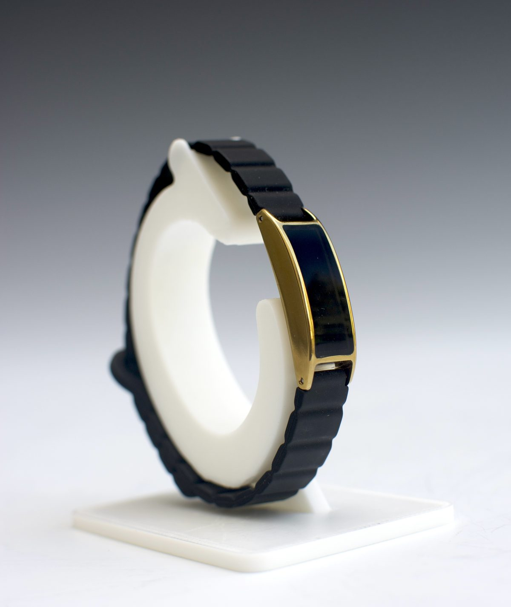
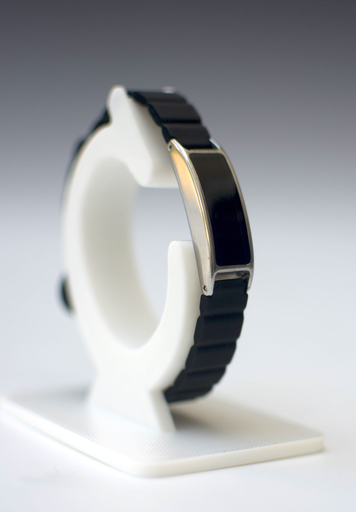
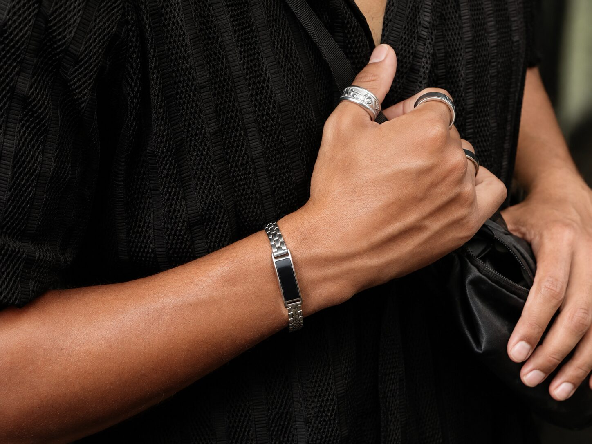

Support
Help Center
Fast answers for bands, charging, app downloads, Bluetooth syncing, orders, and everyday setup.
Questions about Ray?
Bands
Ray uses standard 8 mm swappable bands.




How to change the strap
Watch on YouTubeDownload the app
Scan a QR code or open the link on your phone.
App & sync
How do I get the Chargerless app?
Get the Chargerless app on the phone you want to use with Ray. Choose your download link below: TestFlight for iPhone, or Google Play testing for Android.
iPhone: download with TestFlight
- Open the Chargerless TestFlight invitation on your iPhone.
- If prompted, install Apple's TestFlight app, then return to the invitation.
- Accept the invitation and install Chargerless.
Android: download with Google Play
- Open the Chargerless Google Play testing page on your Android phone.
- Sign in to the Google account you use for Google Play, if asked.
- Join the testing program, then follow the link to install Chargerless from Google Play.
Looking at this page on a computer?
Open this page on your phone, or use the download QR codes in the Help Center.
Can't install or connect?
If the invitation is unavailable or you cannot join the testing program, contact us with your phone model and the message you see. If you already have the app but Ray is not connecting, follow our Bluetooth and syncing checks.
Why is Ray not syncing with the app?
Ray syncs over Bluetooth Low Energy, so the app needs permission and enough background access to stay connected.
First checks
- Keep Bluetooth on.
- Keep Ray near your phone for a few minutes.
- Do not force-quit or kill the Chargerless app. Force-quitting can stop background Bluetooth reconnects.
- Open the app once after restarting your phone.
iPhone
- Turn off Low Power Mode while troubleshooting.
- Do not swipe the Chargerless app away from the app switcher.
- Make sure Bluetooth permission is enabled for Chargerless in iOS Settings.
Android
- Do not force stop the Chargerless app.
- Enable Companion Device Manager access for Chargerless in Android settings if your phone asks for it.
- Allow nearby devices / Bluetooth permissions.
- If your phone has aggressive battery optimization, exclude Chargerless from battery restrictions.
If Ray still does not sync, contact us with your phone model, OS version, and when it last synced.
Bands
What bands work with Ray?
Ray uses a standard 8 mm band, so you can swap the included band for other 8 mm watch or jewelry-style bands.
Want another band for an existing Ray? See buying an extra band, including silver chain-style questions.
Can I swap bands myself?
Yes. Ray is designed to be band-swappable. If you want a different look, choose an 8 mm band and make sure the hardware is secure before wearing it overnight or during exercise.
Watch how to change the strap for a video walkthrough.
What styles are available?
We have photographed Ray with leather, metal, and magnetic band styles. The Help Center shows examples so you can compare how each one looks on-wrist.
What should I check before buying a third-party band?
Use an 8 mm band, check that the clasp is comfortable enough for sleep, and avoid bands with sharp hardware that could press into the solar face or sensors.
What if I have a nickel allergy?
Ray's stainless-steel case contains nickel. Do not use Ray if you have a nickel allergy. Choosing a different band does not change the case material. See Ray's nickel content.
Can I buy a silver chain band or an extra band for Ray?
A silver chain-style band is not currently listed for online purchase. If you want a small silver chain band for your Ray, contact us to ask about the options for that style and size.
How do I buy another band?
You can buy an extra band separately from Ray. Open the Bands section of the shop, choose your band and size, then select Add a band.
The shop currently lists:
- Leather bands: Cognac or Onyx, in Small / Medium or Medium / Large.
- Silicone bands: Carbon Silicone, in One size.
Is Moonlit Silver a band option?
Moonlit Silver names the Ray device finish. It does not name a silver chain band sold separately in the shop. Check the band choices shown for the product you want before adding it to your bag.
For compatibility, fit and materials, read bands and sizing.
Charging & battery
How should I charge Ray?
Ray has a built-in solar cell that charges using outdoor sunlight only.
What kind of light works best?
Use direct sunlight outdoors. About one minute per day can sustain operation. Weather, shade, clothing, orientation and usage affect the energy balance. Indoor lighting does not charge Ray.
What if I don't get any light at all?
Ray can last up to about 2 months on battery when sampling about every 5 minutes. Battery life is shorter if the app or firmware samples more often, if step counting is enabled, or if Ray is spending extra energy reconnecting over Bluetooth.
Do I ever need to plug it in?
No. There's no charging port on the Ray. It's completely self-sustaining.
Orders
When will my order ship?
Already ordered Batch 2? Contact us for a status update on your order. Include your order number or the email used at checkout. The Batch 3 estimate below applies to Batch 3 preorders.
New Batch 3 preorders
We're currently manufacturing Ray. Batch 3 is open for preorder. We expect Batch 3 to ship in December 2026–January 2027.
We'll send email updates as we get closer to the ship date. If you ordered, your Batch 3 preorder is reserved.
Where do you ship?
We currently ship within the United States only. Shipping to Europe and Canada is not available yet.
Can I get a refund?
Yes — orders are fully refundable at any time before shipping, no questions asked. Just email us at team@getchargerless.com.
After delivery, you can try Ray and return it within 60 days for a full product refund. See the return details.
Can I get Ray in Europe?
Not yet. We currently ship Ray within the United States only. Shipping to Europe, including the EU and the UK, is not available at this time.
Can I order for delivery to a European address?
We cannot currently deliver to a European address. Please wait until we announce shipping to your country before placing an order for delivery there.
When will European shipping be available?
We do not have a confirmed date for shipping to Europe. If you would like to ask about availability in your country, contact us or email team@getchargerless.com.
For the current Ray preorder schedule, see shipping and delivery.
Can I get Ray in Canada?
Not yet. We currently ship Ray within the United States only. Shipping to Canada is not available at this time.
Can I order for delivery to a Canadian address?
We cannot currently deliver to a Canadian address. Please wait until we announce Canadian shipping before placing an order for delivery there.
When will shipping to Canada be available?
We do not have a confirmed date. For questions about Canadian availability, contact us or email team@getchargerless.com.
For the current Ray preorder schedule, see shipping and delivery.
Product
What does the Ray track?
The Chargerless Ray tracks the following health metrics around the clock:
- Heart rate — continuous optical heart rate monitoring
- Heart rate variability (HRV) — a key indicator of stress and recovery
- Sleep stages — light, deep, and REM sleep tracking
- Body temperature — skin temperature trends over time
- Steps — daily step counting and activity tracking
- Light exposure — how much sunlight you're getting each day
All data syncs wirelessly to the Chargerless companion app (iOS & Android) where you can view trends, set goals, and get insights.
Ray does not currently track yoga. Activity features are in development; see current yoga and activity support.
Ray does not currently offer fall detection or emergency alerts.
Is the Ray waterproof?
Yes. The Ray is rated IP68, which means it's fully waterproof and dustproof.
You can wear it while:
- Swimming
- Showering
- Running in the rain
- Any other wet conditions
The Ray has no charging port or openings, which makes it inherently more water-resistant than devices that need to be plugged in.
Does Ray contain nickel?
Yes. Ray's case is made of stainless steel, which contains nickel. Do not use Ray if you have a nickel allergy.
Is Ray nickel-free?
No. The stainless-steel case contains nickel, so Ray is not a nickel-free tracker.
Would changing the band make Ray suitable for a nickel allergy?
No. Changing the band does not change the stainless-steel case. Do not use Ray if you have a nickel allergy, regardless of the band you choose.
For general band compatibility, see bands and sizing. If you have another question about Ray's materials before ordering, contact us.
Does Ray have fall detection or emergency alerts?
No. Ray does not currently offer fall detection or emergency alerts. Do not rely on Ray to detect a fall or send an emergency alert.
Could these features come to a future version?
We're considering fall detection and emergency alerts for future versions. Future support is not confirmed. Choose Ray based on the features available today.
What if I need fall detection or emergency alerts?
Ray does not currently meet that requirement. Its everyday health readings do not provide those functions.
See what Ray tracks for its current health measurements. If you're buying for an older adult, our seniors guide covers the app, fit and charging routine.